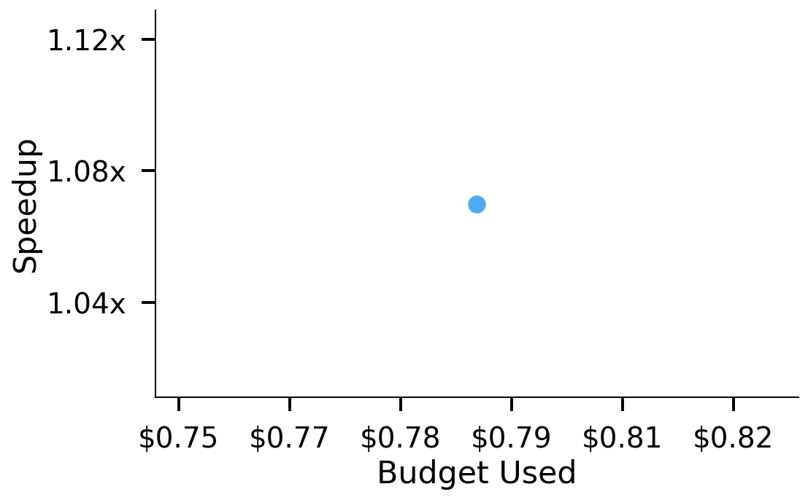
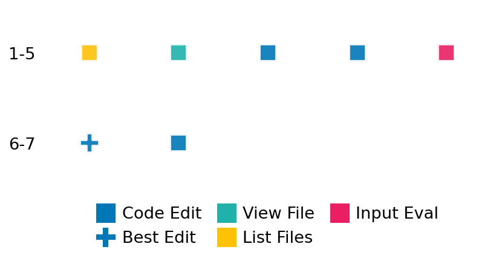

SETTING:
You're an autonomous programmer tasked with solving a specific problem. You are to use the commands defined below to accomplish this task. Every message you send incurs a cost—you will be informed of your usage and remaining budget by the system.
You will be evaluated based on the best-performing piece of code you produce, even if the final code doesn't work or compile (as long as it worked at some point and achieved a score, you will be eligible).
Apart from the default Python packages, you have access to the following additional packages:
- cryptography
- cvxpy
- cython
- dace
- dask
- diffrax
- ecos
- faiss-cpu
- hdbscan
- highspy
- jax
- networkx
- numba
- numpy
- ortools
- pandas
- pot
- psutil
- pulp
- pyomo
- python-sat
- pythran
- scikit-learn
- scipy
- sympy
- torch
YOUR TASK:
Your objective is to define a class named `Solver` in `solver.py` with a method:
```
class Solver:
def solve(self, problem, **kwargs) -> Any:
"""Your implementation goes here."""
...
```
IMPORTANT: Compilation time of your init function will not count towards your function's runtime.
This `solve` function will be the entrypoint called by the evaluation harness. Strive to align your class and method implementation as closely as possible with the desired performance criteria.
For each instance, your function can run for at most 10x the reference runtime for that instance. Strive to have your implementation run as fast as possible, while returning the same output as the reference function (for the same given input). Be creative and optimize your approach!
Your messages should include a short thought about what you should do, followed by a _SINGLE_ command. The command must be enclosed within ``` and ```, like so:
<Reasoning behind executing the command>
```
<command>
```
IMPORTANT: Each set of triple backticks (```) must always be on their own line, without any other words or anything else on that line.
Here are the commands available to you. Ensure you include one and only one of the following commands in each of your responses:
- `edit`: Replace a range of lines with new content in a file. This is how you can create files: if the file does not exist, it will be created. Here is an example:
```
edit
file: <file_name>
lines: <start_line>-<end_line>
---
<new_content>
---
```
The command will:
1. Delete the lines from <start_line> to <end_line> (inclusive)
2. Insert <new_content> starting at <start_line>
3. If both <start_line> and <end_line> are 0, <new_content> will be prepended to the file
Example:
edit
file: solver.py
lines: 5-7
---
def improved_function():
print("Optimized solution")
---
- `ls`: List all files in the current working directory.
- `view_file <file_name> [start_line]`: Display 100 lines of `<file_name>` starting from `start_line` (defaults to line 1).
- `revert`: Revert the code to the best-performing version thus far.
- `reference <string>`: Query the reference solver with a problem and receive its solution. If the problem's input is a list, this command would look like:
```
reference [1,2,3,4]
```
- `eval_input <string>`: Run your current solver implementation on the given input. This is the only command that shows stdout from your solver along with both solutions. Example:
```
eval_input [1,2,3,4]
```
- `eval`: Run evaluation on the current solution and report the results.
- `delete`: Delete a range of lines from a file using the format:
```
delete
file: <file_name>
lines: <start_line>-<end_line>
The command will delete the lines from <start_line> to <end_line> (inclusive)
Example:
delete
file: solver.py
lines: 5-10
```
- `profile <filename.py> <input>`: Profile your currently loaded solve method's performance on a given input. Shows the 25 most time-consuming lines. Requires specifying a python file (e.g., `solver.py`) for validation, though profiling runs on the current in-memory code.
Example:
```
profile solver.py [1, 2, 3]
```
- `profile_lines <filename.py> <line_number1, line_number2, ...> <input>`: Profiles the chosen lines of the currently loaded code on the given input. Requires specifying a python file for validation.
Example:
```
profile_lines solver.py 1,2,3 [1, 2, 3]
```
**TIPS:**
After each edit, a linter will automatically run to ensure code quality. If there are critical linter errors, your changes will not be applied, and you will receive the linter's error message. Typically, linter errors arise from issues like improper indentation—ensure your edits maintain proper code formatting.
**Cython Compilation:** Edits creating or modifying Cython (`.pyx`) files will automatically trigger a compilation attempt (requires a `setup.py`). You will be notified if compilation succeeds or fails. If it fails, the edit to the `.pyx` file will be automatically reverted.
If the code runs successfully without errors, the in-memory 'last known good code' will be updated to the new version. Following successful edits, you will receive a summary of your `solve` function's performance compared to the reference.
If you get stuck, try reverting your code and restarting your train of thought.
Do not put an if __name__ == "__main__": block in your code, as it will not be ran (only the solve function will).
Keep trying to better your code until you run out of money. Do not stop beforehand!
**GOALS:**
Your primary objective is to optimize the `solve` function to run as as fast as possible, while returning the optimal solution.
You will receive better scores the quicker your solution runs, and you will be penalized for exceeding the time limit or returning non-optimal solutions.
Below you find the description of the task you will have to solve. Read it carefully and understand what the problem is and what your solver should do.
**TASK DESCRIPTION:**
Maximum Weighted Independent Set
Given a weighted undirected graph G, find an independent set of nodes such that no two nodes in the set share an edge, and the total sum of the selected nodes’ weights is maximized.
Input: A dict includes a 2d array (2 dim list) adj_matrix with value 0/1 representing the adjacency matrix
adj_matrix[i][j] = 0 : there is no edge between i, j
adj_matrix[i][j] = 1 : there is an edge between i, j
and a list weights where W[i] is the weight associated with node i.
adj_matrix should be symmetric.
Example input: {
adj_matrix = [
[0,1,0,1],
[1,0,1,0],
[0,1,0,1],
[1,0,1,0]
],
weights = [0, 1, 2, 3]
}
Output: A list showing the index of the selected nodes
Example output: [1, 3]
Category: discrete_optimization
Below is the reference implementation. Your function should run much quicker.
import random
from ortools.sat.python import cp_model
| 01: def solve(self, problem: dict[str, list]) -> list[int]:
| 02: """
| 03: Solves the MWIS problem using CP-SAT.
| 04:
| 05: :param problem: dict with 'adj_matrix' and 'weights'
| 06: :return: list of selected node indices.
| 07:
| 08:
| 09: NOTE: Your solution must pass validation by:
| 10: 1. Returning correctly formatted output
| 11: 2. Having no NaN or infinity values
| 12: 3. Matching expected results within numerical tolerance
| 13: """
| 14: adj_matrix = problem["adj_matrix"]
| 15: weights = problem["weights"]
| 16: n = len(adj_matrix)
| 17: model = cp_model.CpModel()
| 18: nodes = [model.NewBoolVar(f"x_{i}") for i in range(n)]
| 19:
| 20: for i in range(n):
| 21: for j in range(i + 1, n):
| 22: if adj_matrix[i][j]:
| 23: model.Add(nodes[i] + nodes[j] <= 1)
| 24:
| 25: model.Maximize(sum(weights[i] * nodes[i] for i in range(n)))
| 26:
| 27: solver = cp_model.CpSolver()
| 28: status = solver.Solve(model)
| 29: if status == cp_model.OPTIMAL:
| 30: return [i for i in range(n) if solver.Value(nodes[i])]
| 31: else:
| 32: return []
| 33:
This function will be used to check if your solution is valid for a given problem. If it returns False, it means the solution is invalid:
import random
from ortools.sat.python import cp_model
| 01: def is_solution( problem: dict[str, list], solution: list[int]) -> bool:
| 02: """
| 03: Verifies independence and weight-optimality.
| 04:
| 05: :param problem: dict with 'adj_matrix' and 'weights'
| 06: :param solution: candidate node indices
| 07: :return: True if valid and optimal.
| 08: """
| 09: try:
| 10: adj_matrix = problem["adj_matrix"]
| 11: weights = problem["weights"]
| 12: for a in range(len(solution)):
| 13: for b in range(a + 1, len(solution)):
| 14: if adj_matrix[solution[a]][solution[b]]:
| 15: return False
| 16: cand_val = sum(weights[i] for i in solution)
| 17: opt = solve(problem)
| 18: opt_val = sum(weights[i] for i in opt)
| 19: return cand_val == opt_val
| 20: except Exception as e:
| 21: logging.error(f"Error verifying solution: {e}")
| 22: return False
| 23:
 AlgoTuner Trajectory
AlgoTuner Trajectory
AlgoTune Task:
max_weighted_independent_set
Model:
Claude Opus 4
Speedup
0.990x
Total Budget
$1.00
Initial System Prompt
AlgoTune Task Description
Maximum Weighted Independent Set
Given a weighted undirected graph G, find an independent set of nodes such that no two nodes in the set share an edge, and the total sum of the selected nodes’ weights is maximized.
Input: A dict includes a 2d array (2 dim list) adj_matrix with value 0/1 representing the adjacency matrix
adj_matrix[i][j] = 0 : there is no edge between i, j
adj_matrix[i][j] = 1 : there is an edge between i, j
and a list weights where W[i] is the weight associated with node i.
adj_matrix should be symmetric.
Example input: {
adj_matrix = [
[0,1,0,1],
[1,0,1,0],
[0,1,0,1],
[1,0,1,0]
],
weights = [0, 1, 2, 3]
}
Output: A list showing the index of the selected nodes
Example output: [1, 3]
Category: discrete_optimization
Reference Implementation
import random
from ortools.sat.python import cp_model
def solve(self, problem: dict[str, list]) -> list[int]:
"""
Solves the MWIS problem using CP-SAT.
:param problem: dict with 'adj_matrix' and 'weights'
:return: list of selected node indices.
NOTE: Your solution must pass validation by:
1. Returning correctly formatted output
2. Having no NaN or infinity values
3. Matching expected results within numerical tolerance
"""
adj_matrix = problem["adj_matrix"]
weights = problem["weights"]
n = len(adj_matrix)
model = cp_model.CpModel()
nodes = [model.NewBoolVar(f"x_{i}") for i in range(n)]
for i in range(n):
for j in range(i + 1, n):
if adj_matrix[i][j]:
model.Add(nodes[i] + nodes[j] <= 1)
model.Maximize(sum(weights[i] * nodes[i] for i in range(n)))
solver = cp_model.CpSolver()
status = solver.Solve(model)
if status == cp_model.OPTIMAL:
return [i for i in range(n) if solver.Value(nodes[i])]
else:
return []Best AlgoTuner-Generated Code
solver.py
class Solver:
def solve(self, problem, **kwargs):
"""
Solves the Maximum Weighted Independent Set problem.
:param problem: dict with 'adj_matrix' and 'weights'
:return: list of selected node indices
"""
adj_matrix = problem["adj_matrix"]
weights = problem["weights"]
n = len(adj_matrix)
# For small graphs, use exact dynamic programming
if n <= 20:
return self._solve_dp(adj_matrix, weights, n)
else:
# For larger graphs, use branch and bound
return self._solve_branch_and_bound(adj_matrix, weights, n)
def _solve_dp(self, adj_matrix, weights, n):
"""Dynamic programming solution for small graphs"""
# dp[mask] = maximum weight of independent set from nodes in mask
dp = {}
parent = {}
# Base case
dp[0] = 0
parent[0] = -1
# Try all possible subsets
for mask in range(1, 1 << n):
dp[mask] = 0
parent[mask] = -1
# Check if this is a valid independent set
valid = True
for i in range(n):
if mask & (1 << i):
for j in range(i + 1, n):
if (mask & (1 << j)) and adj_matrix[i][j]:
valid = False
break
if not valid:
break
if valid:
# Calculate weight
weight = sum(weights[i] for i in range(n) if mask & (1 << i))
dp[mask] = weight
# Find the mask with maximum weight
best_mask = max(dp.keys(), key=lambda x: dp[x])
# Extract nodes from best mask
result = [i for i in range(n) if best_mask & (1 << i)]
return sorted(result)
def _solve_branch_and_bound(self, adj_matrix, weights, n):
"""Branch and bound solution for larger graphs"""
# Start with greedy solution as initial bound
initial_solution = self._greedy_solution(adj_matrix, weights, n)
best_weight = sum(weights[i] for i in initial_solution)
best_solution = initial_solution[:]
# Branch and bound
def branch_and_bound(current, remaining, current_weight):
nonlocal best_weight, best_solution
if not remaining:
if current_weight > best_weight:
best_weight = current_weight
best_solution = current[:]
return
# Upper bound: current weight + sum of remaining weights
upper_bound = current_weight + sum(weights[i] for i in remaining)
if upper_bound <= best_weight:
return # Prune
# Try including the next node
node = remaining[0]
new_remaining = remaining[1:]
# Check if we can include this node
can_include = True
for selected in current:
if adj_matrix[node][selected]:
can_include = False
break
if can_include:
# Include node
new_current = current + [node]
# Remove neighbors from remaining
new_remaining_filtered = [i for i in new_remaining if not adj_matrix[node][i]]
branch_and_bound(new_current, new_remaining_filtered, current_weight + weights[node])
# Try not including the node
branch_and_bound(current, new_remaining, current_weight)
# Sort nodes by weight in descending order for better pruning
nodes = list(range(n))
nodes.sort(key=lambda x: weights[x], reverse=True)
branch_and_bound([], nodes, 0)
return sorted(best_solution)
def _greedy_solution(self, adj_matrix, weights, n):
"""Get initial greedy solution"""
# Sort nodes by weight in descending order
nodes = list(range(n))
nodes.sort(key=lambda x: weights[x], reverse=True)
selected = []
for node in nodes:
# Check if we can add this node
can_add = True
for s in selected:
if adj_matrix[node][s]:
can_add = False
break
if can_add:
selected.append(node)
return selectedSpeedup vs Budget Plot
Speedup vs Budget

Action Sequence
